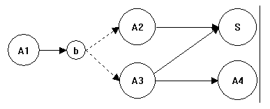
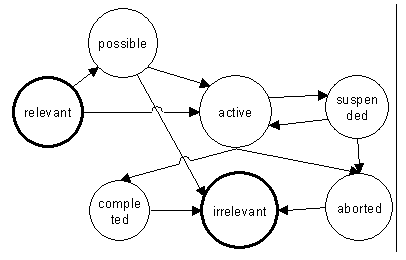
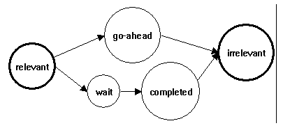

10/16/1996 Samson Tu
Revised 03/05/97: general revision, also to include execution of subguidelines
The heart of the GLIF2 model defines the following guideline steps (whose attributes
are shown in indented lists):
ActionStep
name
next_step
pointer to next step
action
pointer to description of action
subguideline pointer to
possible subguideline
ConditionStep
condition
some boolean condition
destination next
step if "condition" is true
otherwise
nextstep if "condition" is false
BranchStep
branches
one or more possible next steps
order_constraint parallel or
any_order
selection_method all_of one_of some_of
SynchronizationStep
next_step
pointer to next step
continuation
wait_for_all or proceed after one
To give an operational semantics for procedures used to model protocols
and guidelines, I describe an execution model that indicate how a guideline algorithm made
up of these steps should be interpreted. For now I will define an execution model for a
guideline that has no subguidelines.
I will describe the model in terms of operations on a multigraph that has different types
of nodes and links. Transform the steps of a guideline into a graph as follows: ActionStep
and SynchronizationStep are designated state nodes of the graph. We graphically
depict condition steps as one or two solid directed arcs, depending on whether the step
has the "otherwise" attribute. Attach the condition of the step to the
"destination" arc and its negation to the "otherwise" arc. If a branch
step is has "all_of" as the selection_method, the branches are represented as
solid directed arcs. If the selection_method is not "all_of," then the branches
are dotted directed arcs. I made this distinction to separate cases where we know an
action should be carried out from those cases where an action *may* be carried out.
The "next_step" relations of ActionStep and SynchronizationStep are represented
as unconditional directed arcs. They are equivalent to conditional steps where the
condition attribute always evaluate to truth.
Figure 1 depicts a guideline where the ActionStep A1 is followed by a BranchStep b that
allows A2 or A3 to be performed. If the conditions associated with the directed arcs are
true, A2 and A3 merge into SynchronizationStep S. The "otherwise" condition of a
ConditionStep links A3 with A4.
 Figure 1 A graph depicting a guideline.
If there is a directed path from A to B such that the path does not contain any other
state node, we say A is a predecessor of B. Because the graph may contain cycles,
the predecessor relation is not an ordering.
ActionSteps and SynchronizationSteps take place over time. I model their states with state
machines. The states of an ActionStep correspond to the states of the underlying action or
of the subguideline. They include active, completed, aborted, and suspended.
The possible transitions among these states are depicted in Figure 2. Completed
and aborted are both terminal states.
 Figure 2. States of ActionStep
The states of a SynchronizationStep include start, go-ahead, completed and wait.
Figure 3 depict the state-transition diagram of a SynchronizationStep. Start is the
initial state. Both "go-ahead" and "completed" can be terminal
states.
 Figure 3 State-transition diagram
for a SynchronizationStep
The execution model is defined in terms of (1) the state-transition rules of the state
nodes, (2) the activation rules of the state nodes, and (3) an execution algorithm.
For ActionSteps, transitions among its states depend on the state of the
domain-specific action represented by the ActionStep. Sometimes the guideline may contain
rules that specify how transitions should be made (e.g., if WBC is low, abort the
administration of this drug).
For SynchronizationStep, if the continuation is wait-for-all, then transition to the
wait state. If the continuation is proceed-after-one, then make the transition to
go-ahead. If On-going is false, then make transition from wait to completed.
We keep track of where the patient is in the procedure by marking the state nodes of
the procedure. A marking of the nodes in the procedure is a function M mapping nodes of
the procedure to 0 (inactive), 1 (active), 2 (possible). A node of a procedure is relevant
if its marking is greater than 0. For an ActionStep or a SynchronizationStep (that is
not a start node) to become relevant, (1) the predecessor of the node must be active; (2)
the intervention associated with active predecessor of the node must be in a terminal
state, and (3) all conditions, if there is any, on the directed arcs from the active
predecessor must be true. When a state node becomes relevant, its marking is either
"1" (active), if the path from the predecessor contains no dotted arc, or
"2" (possible), if the path from predecessor contains a dotted arc (i.e., the
step is optional). A SynchronizationStep will never follow a BranchStep directly.
Therefore its marking is always "1."
For an ActionStep, the marking changes from "2" to either "1" or
"0" through a query. If the marking is "1", it becomes "0"
(i.e., irrelevant) if (1) its associated action is in a terminal state, and (2) one of its
successors become relevant.
For a SynchronizationStep s, define predecessor branches as the set of
BranchSteps from which there is at least one path that ends in s and that has no
other BranchStep on the path. For SynchronizationStep s, define a predicate On-going(s) to
be true if there is a relevant state node on a path between s and one of its predecessor
branches.
If the continuation of step s is "wait_for_all," make the transition to
"completed" when On-going(s) becomes false. The marking of the step changes to
"0" when it makes the transition to "completed" and when one of its
successors become relevant.
If the continuation of step s is "proceed_after_one," the step becomes
irrelevant when On-going(s) becomes false.
The algorithm for executing a guideline G is as follows:
AS: a set of ActionSteps or Guidelines
p(G): the procedure associated with G
select(AS): returns a member of AS
elementary(S) is true if S has no subguideline
DO(S): application-specific function to carry out a step
delete(AS, S): delete S from AS
ActionSteps(steps): returns the set of Actions Steps in steps (which may include
SynchronizationSteps)
AS := {G};
while not_empty(AS) do
S := select(AS);
if elementary(S), then
DO(S);
AS := delete(AS, S)
else
evaluate the state-transition rules of S
if state(p(S)) != suspended) then
new_steps :=
Execute(p(S));
if empty(new_steps)
then AS:= delete(AS, S);
else AS := AS union
ActionSteps(new_steps);
endif
end
{state nodes} Execute(procedure p)
State nodes are either ActionSteps or SynchronizationSteps
{kind=link}